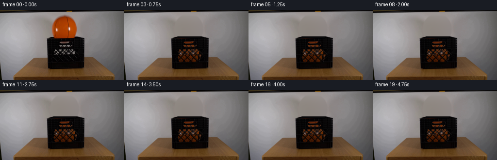
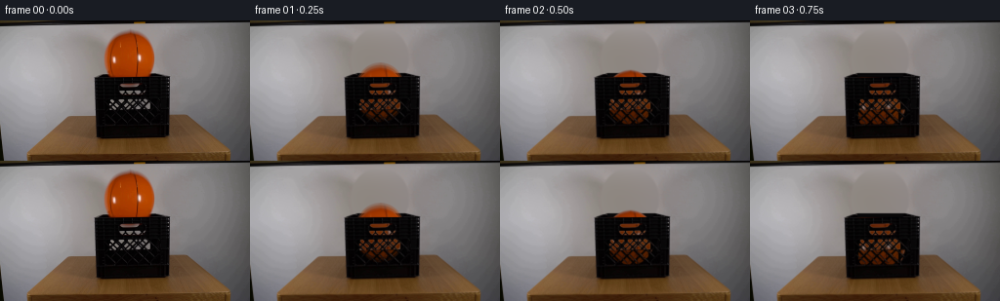
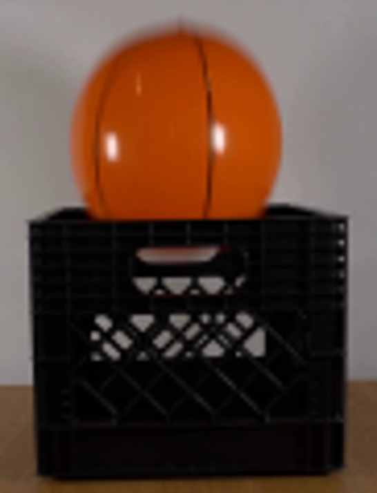
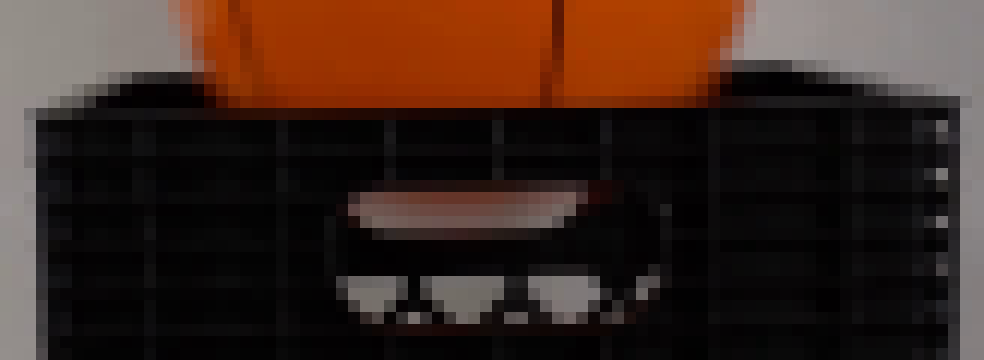
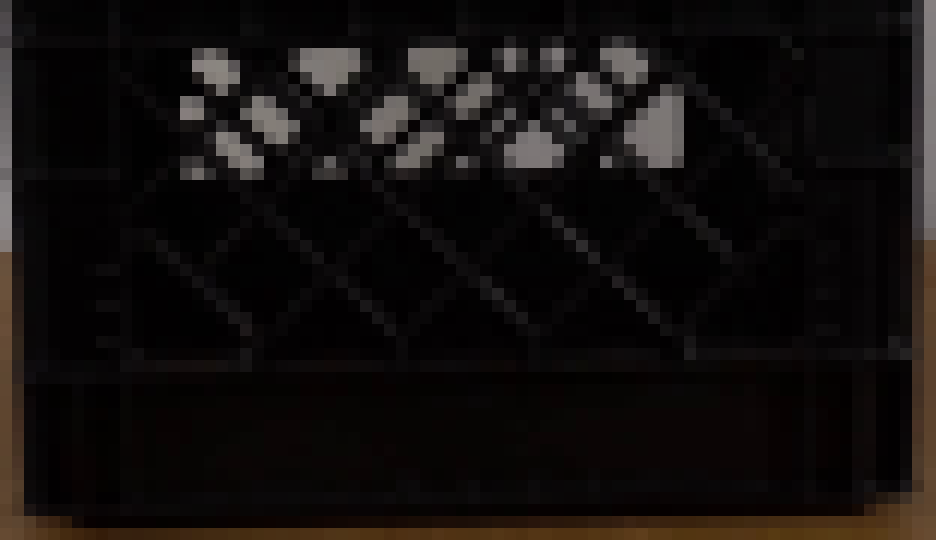
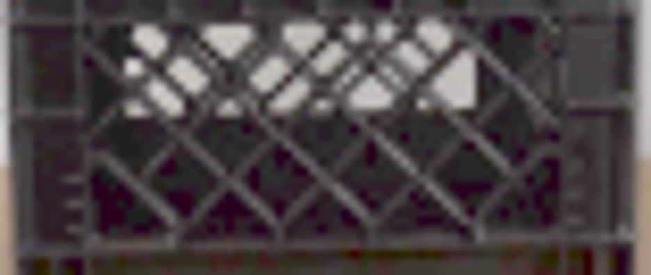
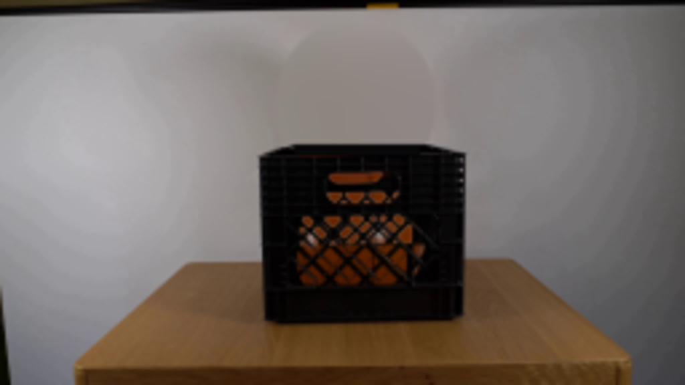
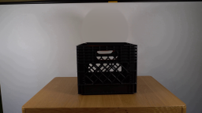
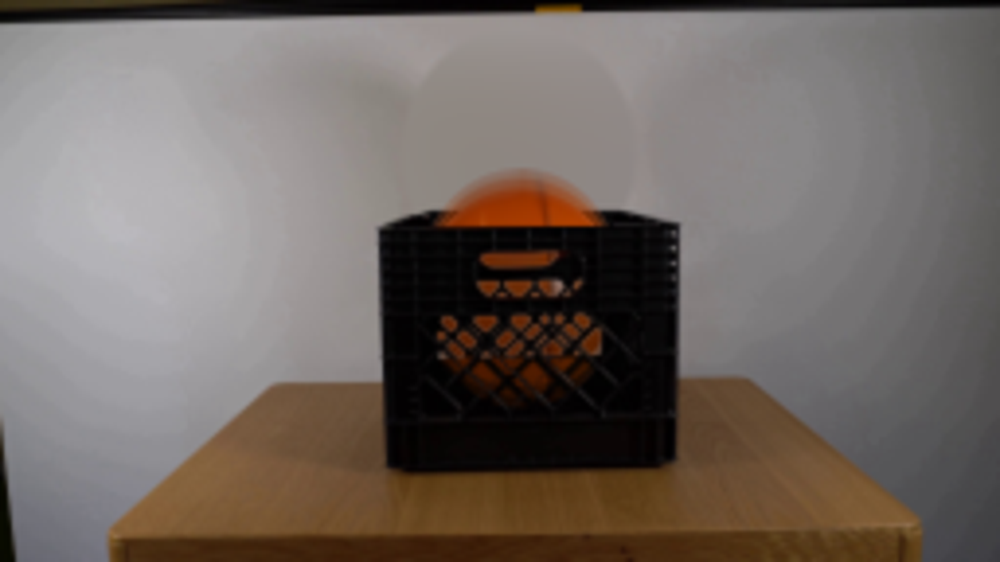

CODING AGENTS AS PIXEL WORLD MODELS
traex/GPT-6.1-Sol · 0014
点击播放 · 原生 RGB 像素
逐轮保存的候选
回放视频、检查图与代码变化。
每份候选均可单独播放。实际图片检查记录在下方工具轨迹中。
候选 01播放与检查图
点击播放 · 原生 RGB 像素


展开代码变化
--- 上一保存版本
+++ 本次保存版本
@@ -0,0 +1,149 @@
+from pathlib import Path
+import numpy as np
+from PIL import Image, ImageDraw
+import cv2
+from scipy.ndimage import gaussian_filter
+import artifact_io
+
+ROOT=Path(__file__).resolve().parent
+H,W=144,256
+S=4
+
+def prepare():
+ src=np.asarray(Image.open(ROOT/'first_frame.png').convert('RGB'))
+ a=src.astype(np.float32)
+ Y,X=np.mgrid[:H,:W].astype(float)
+ # Reconstruct the stationary wall hidden by the released ball from its
+ # neighboring, smooth wall illumination. No scene features are changed.
+ orange=(X>101)&(X<164)&(Y>6)&(Y<59)
+ fitarea=(X>79)&(X<194)&(Y>5)&(Y<83)&~orange&~((X>95)&(X<177)&(Y>52))
+ xx=(X-133)/55; yy=(Y-33)/45
+ terms=np.stack([np.ones_like(X),xx,yy,xx*xx,xx*yy,yy*yy,xx**3,xx*xx*yy,xx*yy*yy,yy**3],axis=-1)
+ coef=np.linalg.lstsq(terms[fitarea],a[fitarea],rcond=None)[0]
+ wall=terms@coef
+ # A soft-edged aperture follows the original ball and its edge halo.
+ q=((X-132.4)/29.3)**2+((Y-38.8)/31.5)**2
+ replace=np.clip((1.13-q)/.15,0,1)*(Y<58)
+ bg=a*(1-replace[...,None])+wall*replace[...,None]
+ # Exposed back lip and inside of the crate, previously behind the ball.
+ rim=Image.new('L',(W*S,H*S)); d=ImageDraw.Draw(rim)
+ poly=lambda pts: [(int(x*S),int(y*S)) for x,y in pts]
+ d.polygon(poly([(98,58),(110,54.2),(159,54.2),(174,58)]),fill=255)
+ rim=np.asarray(rim.resize((W,H),Image.Resampling.LANCZOS))/255.
+ bg=bg*(1-rim[...,None])+np.array([8,7,8])*rim[...,None]
+ # Retain original rim edges at the two sides.
+ sides=((X<110)|(X>156))&(Y>=53)&(Y<59)&(a.mean(2)<40)
+ bg[sides]=a[sides]
+ # Original front panel, including the black ribs and diamond lattice,
+ # is an unchanging foreground occluder. Recover the small apertures.
+ lum=a.mean(2)
+ opens=np.zeros((H,W),np.float32)
+ handle=(X>=119)&(X<=144)&(Y>=64)&(Y<=69)
+ opens[handle]=np.clip((lum[handle]-15)/77,0,1)
+ upper=(X>=121)&(X<=151)&(Y>=71)&(Y<=77)
+ opens[upper]=np.clip((lum[upper]-17)/95,0,1)
+ grid=(X>=110)&(X<=164)&(Y>=80)&(Y<=108)
+ opens[grid]=np.clip((lum[grid]-10)/100,0,1)
+ # The bottom diamonds look black in the source because the interior is
+ # unlit; the front lattice continues through this region. Infer its
+ # geometric aperture rather than treating the darkness as solid plastic.
+ hs=H*S; ws=W*S
+ yyh,xxh=np.mgrid[:hs,:ws]/S
+ diag1=np.abs(((xxh-yyh-32.2+6.65)%13.3)-6.65)
+ diag2=np.abs(((xxh+yyh-200.8+6.65)%13.3)-6.65)
+ apert=(diag1>1.35)&(diag2>1.25)&(xxh>111.0)&(xxh<163.5)&(yyh>91.4)&(yyh<106.5)
+ # Dark left part of the front lattice is already filled; keep its thick
+ # structural stile. Right edge also has an upright rib.
+ apert &= ~((xxh>151.9)&(xxh<154.4))
+ ap=cv2.resize(apert.astype(np.float32),(W,H),interpolation=cv2.INTER_AREA)
+ # Bright diagonal ribs in the original remain fully in the foreground.
+ rib=np.clip((lum-4)/14,0,1)
+ ap*=1-rib
+ opens=np.maximum(opens,ap*.97)
+ # Restore neutral interior illumination in the handle (the initial ball
+ # casts its warm color there). Its neutral color remains behind the ball.
+ bg[handle]=bg[handle]*(1-opens[handle,None])+np.array([111,106,102])*opens[handle,None]
+ return src,a,np.clip(bg,0,255),opens
+
+
+def make_ball(a,cx,cy,rx=25.6,ry=28.0,angle=0):
+ # Resample the photographed rubber surface, preserving its seams,
+ # uneven illumination, specular glints, and photographic softness.
+ yy,xx=np.mgrid[:H*S,:W*S].astype(np.float32)
+ xx=(xx+.5)/S-.5; yy=(yy+.5)/S-.5
+ u=(xx-cx)/rx; v=(yy-cy)/ry
+ rad=np.sqrt(u*u+v*v)
+ alpha=np.clip((1-rad)*25.5*S+.5,0,1)
+ # Slight seam drift corresponds to a small real rotation on landing.
+ sourcex=132.4+u*25.6+angle*np.sqrt(np.maximum(0,1-u*u-v*v))
+ sourcey=39.4+v*28.0
+ # The lower rubber hemisphere was occluded by the front lip in frame 0.
+ # Continue the visible texture and curved panel seams under that lip.
+ lower=sourcey>54.5
+ sourcey=np.where(lower,54.5-(sourcey-54.5)*.60,sourcey)
+ rgb=cv2.remap(a,sourcex.astype(np.float32),sourcey.astype(np.float32),cv2.INTER_LINEAR,borderMode=cv2.BORDER_REFLECT)
+ # Clean source background mixed into antialiased silhouette pixels.
+ bad=(rgb[...,0]<rgb[...,1]*1.3)|(rgb[...,0]-rgb[...,2]<35)
+ fill=np.stack([170+11*u-14*v,60+5*u-10*v,np.maximum(1.,2+u)],axis=-1)
+ blend=bad.astype(float)*np.clip((rad-.89)/.07,0,1)
+ rgb=rgb*(1-blend[...,None])+fill*blend[...,None]
+ shade=np.where(lower,1-.19*np.clip((v-.54)/.46,0,1),1)
+ rgb*=shade[...,None]
+ return rgb,alpha,xx,yy
+
+
+def position(t):
+ start=39.4; rest=88.0; g=1080.0
+ hit=np.sqrt(2*(rest-start)/g)
+ if t<hit:return start+.5*g*t*t,0,1.0
+ elapsed=t-hit; vel=g*hit*.48
+ for bounce in range(5):
+ duration=2*vel/g
+ if elapsed<duration:
+ return rest-vel*elapsed+.5*g*elapsed**2,bounce+1,1.0
+ elapsed-=duration;vel*=.37
+ return rest,5,1.0
+
+
+def generate():
+ src,a,bg,opens=prepare()
+ yy,xx=np.mgrid[:H*S,:W*S].astype(np.float32); yy=(yy+.5)/S-.5; xx=(xx+.5)/S-.5
+ base=cv2.resize(bg,(W*S,H*S),interpolation=cv2.INTER_CUBIC)
+ foreground=cv2.resize(a,(W*S,H*S),interpolation=cv2.INTER_CUBIC)
+ gaps=cv2.resize(opens,(W*S,H*S),interpolation=cv2.INTER_LINEAR)
+ frames=[src]
+ for i in range(1,20):
+ t=i/4
+ accum=np.zeros_like(a)
+ # Short camera exposure at constant frame rate, with subtle blur on
+ # fast drops rather than duplicate or interpolated video frames.
+ for dt in [-.010,0,.010]:
+ cy,bounce,_=position(max(0,t+dt))
+ cx=132.4+.5*(1-np.exp(-t*4))
+ rgb,ba,_,_=make_ball(a,cx,cy,25.6,28.,angle=1.8*(1-np.exp(-max(0,t-.25)*3)))
+ # Inside the crate, diffuse room light is attenuated by the black
+ # walls. The exposed hemisphere keeps the source illumination.
+ inside=np.clip((yy-57.6)/8,0,1)
+ depth=np.clip((yy-67)/46,0,1)
+ shading=1-inside*(.35+.16*depth)
+ rgb=rgb*shading[...,None]
+ # The crate foreground cuts off the lower ball except at holes.
+ front=np.clip((yy-57.1)/.8,0,1)*((xx>=97)&(xx<=174)&(yy<=121))
+ visibility=1-front+front*gaps
+ ball_alpha=ba*visibility
+ rendered=base.copy()
+ # Use the unmodified front panel under the moving object.
+ region=(yy>=58)&(xx>=97)&(xx<=174)&(yy<=121)
+ rendered[region]=foreground[region]
+ rendered=rendered*(1-ball_alpha[...,None])+rgb*ball_alpha[...,None]
+ small=cv2.resize(rendered,(W,H),interpolation=cv2.INTER_AREA)
+ accum+=small/3
+ frames.append(np.uint8(np.clip(np.rint(accum),0,255)))
+ frames=np.stack(frames)
+ artifact_io.save(frames,ROOT)
+ Image.fromarray(bg.astype('uint8')).save(ROOT/'.tmp/background.png')
+ Image.fromarray((opens*255).astype('uint8')).save(ROOT/'.tmp/apertures.png')
+ Image.fromarray(frames[1]).resize((1024,576)).save(ROOT/'.tmp/frame1.png')
+ Image.fromarray(frames[4]).resize((1024,576)).save(ROOT/'.tmp/rest.png')
+
+if __name__=='__main__':generate()
候选 02播放与检查图
点击播放 · 原生 RGB 像素

展开代码变化
--- 上一保存版本
+++ 本次保存版本
@@ -3,6 +3,8 @@
from PIL import Image, ImageDraw
import cv2
from scipy.ndimage import gaussian_filter
+from scipy.sparse import coo_matrix
+from scipy.sparse.linalg import spsolve
import artifact_io
ROOT=Path(__file__).resolve().parent
@@ -15,16 +17,31 @@
Y,X=np.mgrid[:H,:W].astype(float)
# Reconstruct the stationary wall hidden by the released ball from its
# neighboring, smooth wall illumination. No scene features are changed.
- orange=(X>101)&(X<164)&(Y>6)&(Y<59)
- fitarea=(X>79)&(X<194)&(Y>5)&(Y<83)&~orange&~((X>95)&(X<177)&(Y>52))
- xx=(X-133)/55; yy=(Y-33)/45
- terms=np.stack([np.ones_like(X),xx,yy,xx*xx,xx*yy,yy*yy,xx**3,xx*xx*yy,xx*yy*yy,yy**3],axis=-1)
- coef=np.linalg.lstsq(terms[fitarea],a[fitarea],rcond=None)[0]
- wall=terms@coef
- # A soft-edged aperture follows the original ball and its edge halo.
+ # A harmonic continuation of the adjacent wall eliminates the sphere's
+ # old silhouette without introducing an artificial flat-color patch.
+ wall=a.copy()
+ for row in range(52,78):
+ for col in range(95,179):
+ f=(col-94)/85.
+ wall[row,col]=(1-f)*a[row,94]+f*a[row,179]
q=((X-132.4)/29.3)**2+((Y-38.8)/31.5)**2
- replace=np.clip((1.13-q)/.15,0,1)*(Y<58)
- bg=a*(1-replace[...,None])+wall*replace[...,None]
+ hole=(q<1.14)&(Y>4)&(Y<76)
+ coords=np.argwhere(hole)
+ labels=np.full((H,W),-1,int)
+ labels[hole]=np.arange(len(coords))
+ rows=[];cols=[];vals=[];rhs=np.zeros((len(coords),3))
+ for k,(y,x) in enumerate(coords):
+ rows.append(k);cols.append(k);vals.append(4.)
+ for dy,dx in ((-1,0),(1,0),(0,-1),(0,1)):
+ j=labels[y+dy,x+dx]
+ if j>=0:
+ rows.append(k);cols.append(j);vals.append(-1.)
+ else:rhs[k]+=wall[y+dy,x+dx]
+ mat=coo_matrix((vals,(rows,cols)),shape=(len(coords),len(coords))).tocsr()
+ wall[hole]=spsolve(mat,rhs)
+ bg=a.copy()
+ replace=hole&(Y<58)
+ bg[replace]=wall[replace]
# Exposed back lip and inside of the crate, previously behind the ball.
rim=Image.new('L',(W*S,H*S)); d=ImageDraw.Draw(rim)
poly=lambda pts: [(int(x*S),int(y*S)) for x,y in pts]
@@ -96,7 +113,7 @@
start=39.4; rest=88.0; g=1080.0
hit=np.sqrt(2*(rest-start)/g)
if t<hit:return start+.5*g*t*t,0,1.0
- elapsed=t-hit; vel=g*hit*.48
+ elapsed=t-hit; vel=g*hit*.57
for bounce in range(5):
duration=2*vel/g
if elapsed<duration:
@@ -131,12 +148,13 @@
front=np.clip((yy-57.1)/.8,0,1)*((xx>=97)&(xx<=174)&(yy<=121))
visibility=1-front+front*gaps
ball_alpha=ba*visibility
- rendered=base.copy()
- # Use the unmodified front panel under the moving object.
- region=(yy>=58)&(xx>=97)&(xx<=174)&(yy<=121)
- rendered[region]=foreground[region]
- rendered=rendered*(1-ball_alpha[...,None])+rgb*ball_alpha[...,None]
- small=cv2.resize(rendered,(W,H),interpolation=cv2.INTER_AREA)
+ premult=cv2.resize(rgb*ball_alpha[...,None],(W,H),interpolation=cv2.INTER_AREA)
+ alpha=cv2.resize(ball_alpha,(W,H),interpolation=cv2.INTER_AREA)
+ rendered=bg.copy()
+ yyl,xxl=np.mgrid[:H,:W]
+ region=(yyl>=58)&(xxl>=97)&(xxl<=174)&(yyl<=121)
+ rendered[region]=a[region]
+ small=rendered*(1-alpha[...,None])+premult
accum+=small/3
frames.append(np.uint8(np.clip(np.rint(accum),0,255)))
frames=np.stack(frames)
候选 03播放与检查图
可观测工具轨迹
实际执行的命令与返回图片。
命令 1exit 0
/bin/bash -lc 'ls -la && cat prompt.txt && cat GENERATION_RULES.md'
命令 2exit 0
/bin/bash -lc "cat artifact_io.py && python - <<'PY'
from PIL import Image
im=Image.open('first_frame.png'); print(im.mode,im.size); im.resize((1024,576)).save('.tmp/up.png')
PY"命令 3exit 0
/bin/bash -lc "python - <<'PY'
from PIL import Image
im=Image.open('first_frame.png');im.crop((90,5,181,124)).resize((546,714)).save('.tmp/crop.png')
import importlib.util
for m in ['numpy','scipy','cv2','PIL']:print(m,importlib.util.find_spec(m) is not None)
PY"命令 4exit 0
/bin/bash -lc "python - <<'PY'
import numpy as np
from PIL import Image
im=np.array(Image.open('first_frame.png'))
for y in range(50,103,3):
print(y, ['%d/%d/%d'%tuple(im[y,x]) for x in range(110,156,5)])
PY"命令 5exit 0
/bin/bash -lc "python - <<'PY'
from PIL import Image
im=Image.open('first_frame.png');im.crop((94,49,176,79)).resize((984,360),Image.Resampling.NEAREST).save('.tmp/rim.png')
PY"命令 6exit 0
/bin/bash -lc "python - <<'PY'
from PIL import Image
im=Image.open('first_frame.png');im.crop((97,77,175,122)).resize((936,540),Image.Resampling.NEAREST).save('.tmp/grid.png')
PY"命令 7exit 0
/bin/bash -lc "python - <<'PY'
import numpy as np
from PIL import Image
im=np.array(Image.open('first_frame.png')).astype(float)
m=(im[:,:,0]>1.5*im[:,:,1])&(im[:,:,0]>70)&(im[:,:,0]-im[:,:,2]>45)
for y in range(8,59):
xs=np.where(m[y,95:176])[0]+95
if len(xs):print(y,xs.min(),xs.max())
PY"命令 8exit 0
/bin/bash -lc "python - <<'PY'
from PIL import Image
import numpy as np
im=np.array(Image.open('first_frame.png'))
a=(255*(im/255.)**.38).astype('uint8'); Image.fromarray(a).crop((97,78,175,111)).resize((936,396)).save('.tmp/bright.png')
PY"命令 9exit 0
/bin/bash -lc "python - <<'PY'
from PIL import Image,ImageDraw,ImageFont
import numpy as np
im=np.array(Image.open('first_frame.png')); im=(255*(im/255.)**.45).astype('uint8')
sc=9; out=Image.fromarray(im).resize((256*sc,144*sc),Image.Resampling.NEAREST);d=ImageDraw.Draw(out)
for x in range(100,173,5):
d.line((x*sc,78*sc,x*sc,110*sc), fill=(255,0,0),width=1); d.text((x*sc,108*sc),str(x),fill='white')
for y in range(80,109,5):
d.line((100*sc,y*sc,173*sc,y*sc), fill=(255,0,0),width=1);d.text((100*sc,y*sc),str(y),fill='white')
out.crop((99*sc,77*sc,175*sc,113*sc)).save('.tmp/coords.png')
PY"命令 10exit 0
/bin/bash -lc "cat > generate.py <<'PY'
from pathlib import Path
import numpy as np
from PIL import Image, ImageDraw
import cv2
from scipy.ndimage import gaussian_filter
import artifact_io
ROOT=Path(__file__).resolve().parent
H,W=144,256
S=4
def prepare():
src=np.asarray(Image.open(ROOT/'first_frame.png').convert('RGB'))
a=src.astype(np.float32)
Y,X=np.mgrid[:H,:W].astype(float)
# Reconstruct the stationary wall hidden by the released ball from its
# neighboring, smooth wall illumination. No scene features are changed.
orange=(X>101)&(X<164)&(Y>6)&(Y<59)
fitarea=(X>79)&(X<194)&(Y>5)&(Y<83)&~orange&~((X>95)&(X<177)&(Y>52))
xx=(X-133)/55; yy=(Y-33)/45
terms=np.stack([np.ones_like(X),xx,yy,xx*xx,xx*yy,yy*yy,xx**3,xx*xx*yy,xx*yy*yy,yy**3],axis=-1)
coef=np.linalg.lstsq(terms[fitarea],a[fitarea],rcond=None)[0]
wall=terms@coef
# A soft-edged aperture follows the original ball and its edge halo.
q=((X-132.4)/29.3)**2+((Y-38.8)/31.5)**2
replace=np.clip((1.13-q)/.15,0,1)*(Y<58)
bg=a*(1-replace[...,None])+wall*replace[...,None]
# Exposed back lip and inside of the crate, previously behind the ball.
rim=Image.new('L',(W*S,H*S)); d=ImageDraw.Draw(rim)
poly=lambda pts: [(int(x*S),int(y*S)) for x,y in pts]
d.polygon(poly([(98,58),(110,54.2),(159,54.2),(174,58)]),fill=255)
rim=np.asarray(rim.resize((W,H),Image.Resampling.LANCZOS))/255.
bg=bg*(1-rim[...,None])+np.array([8,7,8])*rim[...,None]
# Retain original rim edges at the two sides.
sides=((X<110)|(X>156))&(Y>=53)&(Y<59)&(a.mean(2)<40)
bg[sides]=a[sides]
# Original front panel, including the black ribs and diamond lattice,
# is an unchanging foreground occluder. Recover the small apertures.
lum=a.mean(2)
opens=np.zeros((H,W),np.float32)
handle=(X>=119)&(X<=144)&(Y>=64)&(Y<=69)
opens[handle]=np.clip((lum[handle]-15)/77,0,1)
upper=(X>=121)&(X<=151)&(Y>=71)&(Y<=77)
opens[upper]=np.clip((lum[upper]-17)/95,0,1)
grid=(X>=110)&(X<=164)&(Y>=80)&(Y<=108)
opens[grid]=np.clip((lum[grid]-10)/100,0,1)
# The bottom diamonds look black in the source because the interior is
# unlit; the front lattice continues through this region. Infer its
# geometric aperture rather than treating the darkness as solid plastic.
hs=H*S; ws=W*S
yyh,xxh=np.mgrid[:hs,:ws]/S
diag1=np.abs(((xxh-yyh-32.2+6.65)%13.3)-6.65)
diag2=np.abs(((xxh+yyh-200.8+6.65)%13.3)-6.65)
apert=(diag1>1.35)&(diag2>1.25)&(xxh>111.0)&(xxh<163.5)&(yyh>91.4)&(yyh<106.5)
# Dark left part of the front lattice is already filled; keep its thick
# structural stile. Right edge also has an upright rib.
apert &= ~((xxh>151.9)&(xxh<154.4))
ap=cv2.resize(apert.astype(np.float32),(W,H),interpolation=cv2.INTER_AREA)
# Bright diagonal ribs in the original remain fully in the foreground.
rib=np.clip((lum-4)/14,0,1)
ap*=1-rib
opens=np.maximum(opens,ap*.97)
# Restore neutral interior illumination in the handle (the initial ball
# casts its warm color there). Its neutral color remains behind the ball.
bg[handle]=bg[handle]*(1-opens[handle,None])+np.array([111,106,102])*opens[handle,None]
return src,a,np.clip(bg,0,255),opens
def make_ball(a,cx,cy,rx=25.6,ry=28.0,angle=0):
# Resample the photographed rubber surface, preserving its seams,
# uneven illumination, specular glints, and photographic softness.
yy,xx=np.mgrid[:H*S,:W*S].astype(np.float32)
xx=(xx+.5)/S-.5; yy=(yy+.5)/S-.5
u=(xx-cx)/rx; v=(yy-cy)/ry
rad=np.sqrt(u*u+v*v)
alpha=np.clip((1-rad)*25.5*S+.5,0,1)
# Slight seam drift corresponds to a small real rotation on landing.
sourcex=132.4+u*25.6+angle*np.sqrt(np.maximum(0,1-u*u-v*v))
sourcey=39.4+v*28.0
# The lower rubber hemisphere was occluded by the front lip in frame 0.
# Continue the visible texture and curved panel seams under that lip.
lower=sourcey>54.5
sourcey=np.where(lower,54.5-(sourcey-54.5)*.60,sourcey)
rgb=cv2.remap(a,sourcex.astype(np.float32),sourcey.astype(np.float32),cv2.INTER_LINEAR,borderMode=cv2.BORDER_REFLECT)
# Clean source background mixed into antialiased silhouette pixels.
bad=(rgb[...,0]<rgb[...,1]*1.3)|(rgb[...,0]-rgb[...,2]<35)
fill=np.stack([170+11*u-14*v,60+5*u-10*v,np.maximum(1.,2+u)],axis=-1)
blend=bad.astype(float)*np.clip((rad-.89)/.07,0,1)
rgb=rgb*(1-blend[...,None])+fill*blend[...,None]
shade=np.where(lower,1-.19*np.clip((v-.54)/.46,0,1),1)
rgb*=shade[...,None]
return rgb,alpha,xx,yy
def position(t):
start=39.4; rest=88.0; g=1080.0
hit=np.sqrt(2*(rest-start)/g)
if t<hit:return start+.5*g*t*t,0,1.0
elapsed=t-hit; vel=g*hit*.48
for bounce in range(5):
duration=2*vel/g
if elapsed<duration:
return rest-vel*elapsed+.5*g*elapsed**2,bounce+1,1.0
elapsed-=duration;vel*=.37
return rest,5,1.0
def generate():
src,a,bg,opens=prepare()
yy,xx=np.mgrid[:H*S,:W*S].astype(np.float32); yy=(yy+.5)/S-.5; xx=(xx+.5)/S-.5
base=cv2.resize(bg,(W*S,H*S),interpolation=cv2.INTER_CUBIC)
foreground=cv2.resize(a,(W*S,H*S),interpolation=cv2.INTER_CUBIC)
gaps=cv2.resize(opens,(W*S,H*S),interpolation=cv2.INTER_LINEAR)
frames=[src]
for i in range(1,20):
t=i/4
accum=np.zeros_like(a)
# Short camera exposure at constant frame rate, with subtle blur on
# fast drops rather than duplicate or interpolated video frames.
for dt in [-.010,0,.010]:
cy,bounce,_=position(max(0,t+dt))
cx=132.4+.5*(1-np.exp(-t*4))
rgb,ba,_,_=make_ball(a,cx,cy,25.6,28.,angle=1.8*(1-np.exp(-max(0,t-.25)*3)))
# Inside the crate, diffuse room light is attenuated by the black
# walls. The exposed hemisphere keeps the source illumination.
inside=np.clip((yy-57.6)/8,0,1)
depth=np.clip((yy-67)/46,0,1)
shading=1-inside*(.35+.16*depth)
rgb=rgb*shading[...,None]
# The crate foreground cuts off the lower ball except at holes.
front=np.clip((yy-57.1)/.8,0,1)*((xx>=97)&(xx<=174)&(yy<=121))
visibility=1-front+front*gaps
ball_alpha=ba*visibility
rendered=base.copy()
# Use the unmodified front panel under the moving object.
region=(yy>=58)&(xx>=97)&(xx<=174)&(yy<=121)
rendered[region]=foreground[region]
rendered=rendered*(1-ball_alpha[...,None])+rgb*ball_alpha[...,None]
small=cv2.resize(rendered,(W,H),interpolation=cv2.INTER_AREA)
accum+=small/3
frames.append(np.uint8(np.clip(np.rint(accum),0,255)))
frames=np.stack(frames)
artifact_io.save(frames,ROOT)
Image.fromarray(bg.astype('uint8')).save(ROOT/'.tmp/background.png')
Image.fromarray((opens*255).astype('uint8')).save(ROOT/'.tmp/apertures.png')
Image.fromarray(frames[1]).resize((1024,576)).save(ROOT/'.tmp/frame1.png')
Image.fromarray(frames[4]).resize((1024,576)).save(ROOT/'.tmp/rest.png')
if __name__=='__main__':generate()
PY
python generate.py"命令 11exit 0
/bin/bash -lc "python - <<'PY'
p='generate.py'
s=open(p).read().replace('from scipy.ndimage import gaussian_filter','from scipy.ndimage import gaussian_filter\\nfrom scipy.sparse import coo_matrix\\nfrom scipy.sparse.linalg import spsolve')
a=s.index(' orange=(X>101)'); b=s.index(' # Exposed back lip',a)
s=s[:a]+''' # A harmonic continuation of the adjacent wall eliminates the sphere's
# old silhouette without introducing an artificial flat-color patch.
wall=a.copy()
for row in range(52,78):
for col in range(95,179):
f=(col-94)/85.
wall[row,col]=(1-f)*a[row,94]+f*a[row,179]
q=((X-132.4)/29.3)**2+((Y-38.8)/31.5)**2
hole=(q<1.14)&(Y>4)&(Y<76)
coords=np.argwhere(hole)
labels=np.full((H,W),-1,int)
labels[hole]=np.arange(len(coords))
rows=[];cols=[];vals=[];rhs=np.zeros((len(coords),3))
for k,(y,x) in enumerate(coords):
rows.append(k);cols.append(k);vals.append(4.)
for dy,dx in ((-1,0),(1,0),(0,-1),(0,1)):
j=labels[y+dy,x+dx]
if j>=0:
rows.append(k);cols.append(j);vals.append(-1.)
else:rhs[k]+=wall[y+dy,x+dx]
mat=coo_matrix((vals,(rows,cols)),shape=(len(coords),len(coords))).tocsr()
wall[hole]=spsolve(mat,rhs)
bg=a.copy()
replace=hole&(Y<58)
bg[replace]=wall[replace]
''' + s[b:]
s=s.replace('vel=g*hit*.48','vel=g*hit*.57')
a=s.index(' rendered=base.copy()');b=s.index(' accum+=small/3',a)
s=s[:a]+''' premult=cv2.resize(rgb*ball_alpha[...,None],(W,H),interpolation=cv2.INTER_AREA)
alpha=cv2.resize(ball_alpha,(W,H),interpolation=cv2.INTER_AREA)
rendered=bg.copy()
yyl,xxl=np.mgrid[:H,:W]
region=(yyl>=58)&(xxl>=97)&(xxl<=174)&(yyl<=121)
rendered[region]=a[region]
small=rendered*(1-alpha[...,None])+premult
''' + s[b:]
open(p,'w').write(s)
PY
python generate.py"命令 12exit 2
/bin/bash -lc "python - <<'PY'
from PIL import Image
import numpy as np
p=np.load('pixels.npz')['pixels']
a=np.stack([(p>>16)&255,(p>>8)&255,p&255],axis=-1).transpose(2,0,1,3).astype('uint8')
assert a.shape==(20,144,256,3)
assert np.array_equal(a[0],np.array(Image.open('first_frame.png')))
print('Verified: 20 RGB frames, 256Ã144, exact first frame.')
PY
if command -v ffmpeg >/dev/null; then ffmpeg -loglevel error -y -framerate 4 -i frames/%02d.png -c:v libx264 -crf 16 -pix_fmt yuv420p -movflags +faststart video.mp4; fi
ls -lh pixels.npz index.html video.mp4 2>/dev/null"视觉工具实际返回图片 1

视觉工具实际返回图片 2

视觉工具实际返回图片 3

视觉工具实际返回图片 4

视觉工具实际返回图片 5

视觉工具实际返回图片 6

视觉工具实际返回图片 7

视觉工具实际返回图片 8

视觉工具实际返回图片 9

视觉工具实际返回图片 10
视觉工具实际返回图片 11

保存候选 3 份；完成命令 12 次；可验证图片返回 11 张。原始 API 响应与完整日志保留在本地。